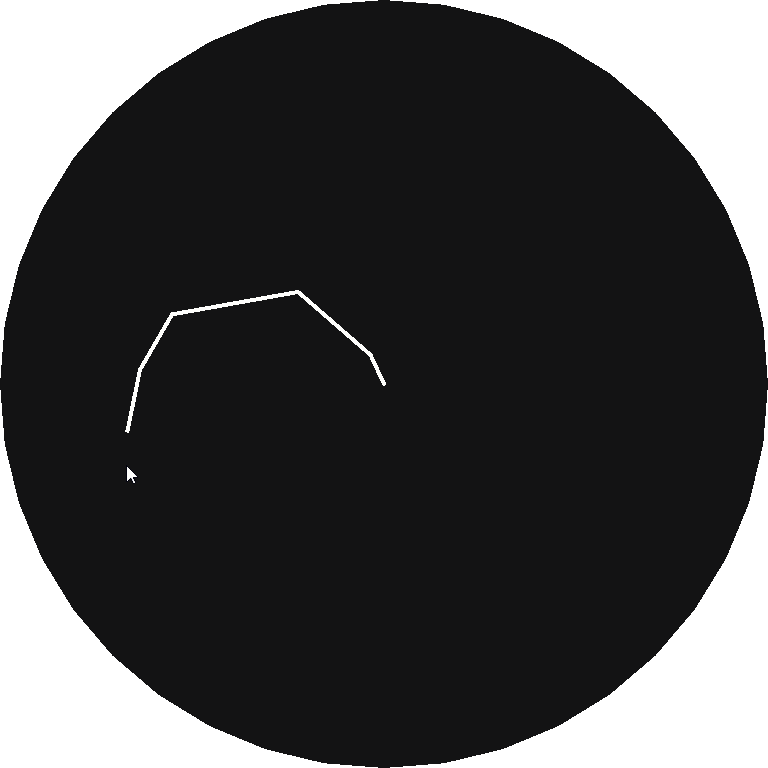

Posts
This is a place for me to post the odd coding projects that I am doing, and explain how I did them in case anyone wants to do it for themselves.
Logistic Map
I spent a few hour's making a program to plot it. It takes the equation xn+1 = rxn(1 - xn) or new_value = r * current_value * (1 - current_value) written in pseudocode (a population modelling equation that mostly stabilises as a consistent value or a cycle of values), and plots the results of a few hundred iterations on one column of the diagram, and then increases the variable r (the reproductive number) by a small amount before repeating the process for the next column. The top variation has the equation plotted only after the results stabilise ( ignore_first_values = true ), and the bottom version includes the points before the stabilisation as well ( ignore_first_values = false ).

Here is a Pseudocode explanation of how I did it
r = 0,
starting_poluation = 0.4, // The starting population doesn't matter too much
graph = new_image(),
ignore_first_values = true;
var i = 0;
repeat ammount_of_columns { // I used 4,700, you can use for loop here instead
var population = starting_poluation;
if ignore_first_values { // This part is optional
repeat a_large_number { // I used 500
population = run_equation(population);
}
}
repeat ammount_of_detail_per_column { // I used 50
population = run_equation(population);
draw_to_image(); // Use i as x and population * something as y
}
r += horizontal_detail; // I used 0.0009
i++;
}
save_the_image();
Inverse Kinematics (Wiggly Version)
This version of inverse kinematics isn't the most accurate, but it's easier so understand compared to the other version, and has the benefit of being able to bend each individual joint in any direction, at the cost of not being able to control that direction.
It works by looping through each segment from front to back, and for each one, pointing in the direction of it's target (either the main target or the end of the previous segment) and moving one end to meet it there. It then moves the whole thing back to the anchored position.
Pseudocode explanation
for i, loop_through_all_segments { // Start with the 'hand' end
update_target_position();
if i != 0 {
set_target_to_the_end_of_next_segment[segment i-1];
}
// Move to where second_end == target
first_end = target - sin/cos(angle_to_target) * segment_length;
second_end = target;
}
find_distance_to_anchor();
loop_through_and_move_everything_back();
draw_each_segment_as_line_from(first_end, to second_end);